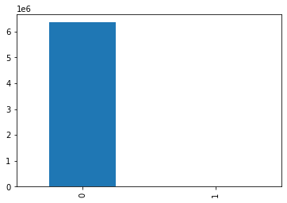
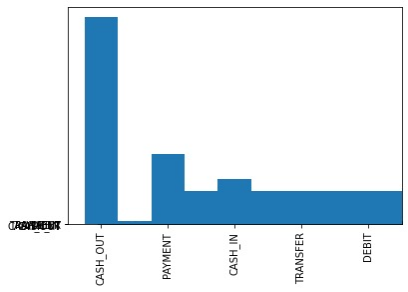
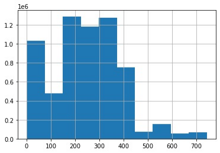
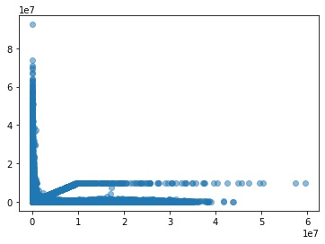
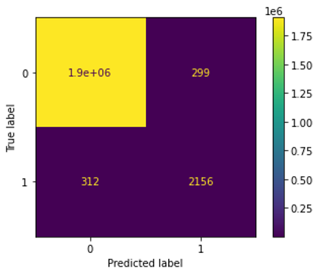

Plot - 1: Count the number of fraud values
Plot - 2: Time variable and most transactions occur in the first half of our samples
Plot - 3: type of transaction
Plot - 4: Scatter plot between amount and origin balance
Plot - 5: Visualization of confusion matrix plot
| Question | Answer | |
|---|---|---|
| Total revenue for the current year | {'2015': 29036749.18999953, '2016': 25730943.58999988, '2017': 31417495.02999995} | |
| New Customer Revenue | {'2016': 17206366.900000416, '2017': 21769213.009999473} | |
| Existing Customer Revenue Current Year | {'2016': 8524576.690000007, '2017': 9648282.020000076} | |
| Total Customers Current Year | {'2015': 231294, '2016': 204646, '2017': 249987} | |
| Total Customers Previous Year | {'2016': 231294, '2017': 204646} | |
| New Customers | {'2016': 136891, '2017': 173449} | |
| Lost Customers | {'2016': 67755, '2017': 76538} | |